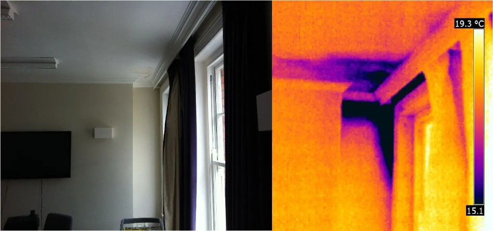
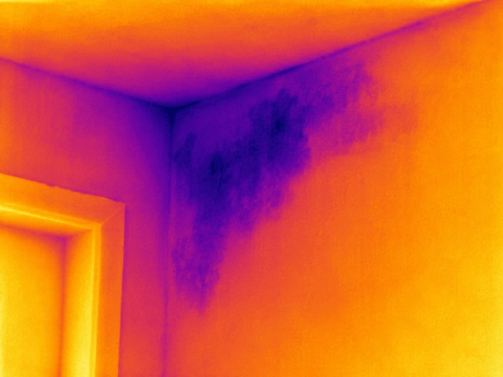
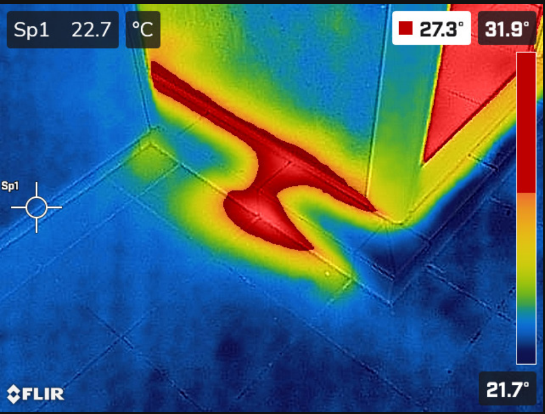
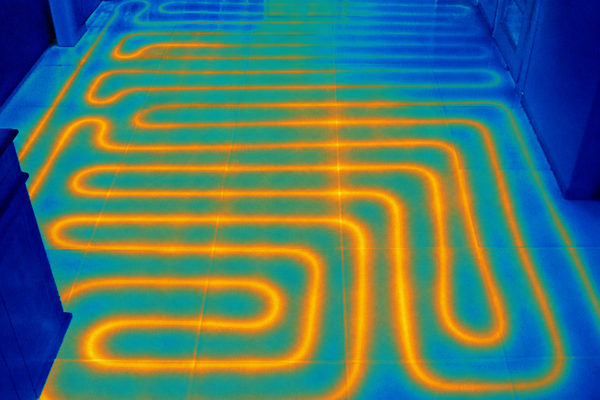
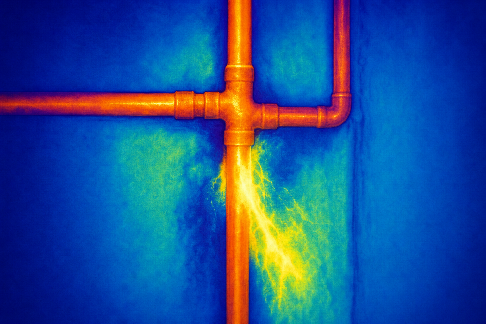
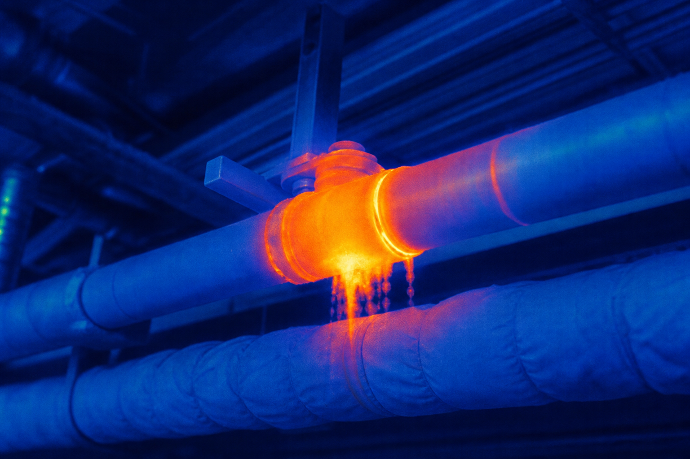

Хидроинспект
Откриване и намиране на течове в област Пловдив
Имате теч и не знаете откъде е? Намиране на теч с термокамера в Пловдив — без къртене, с термовизия и влагомер. След диагностиката — и ремонт на течове по желание.
- Без хаотично къртене
- Доклад + снимки и видео
- Ремонт по желание
Услуги
Откриване на скрити течове — без ограничение в обекта
Бързо и лесно откриване на скрити течове от всевъзможни места. Диагностиката е първата и най-важна стъпка — спестява пари, време и ядове. Работим с професионална термокамера и допълнителна техника, показваме прецизно къде е проблемът, обясняваме причината на място и даваме варианти за решение. По желание отстраняваме теча сами. Изготвяме професионални доклади със снимков и видео материал. Ако не сте сигурни дали можем да помогнем — обадете се и попитайте.
-
Теч в стена, под или таван
Локализираме скрита влага и теч зад мазилка, в замазка или над окачен таван — без къртене на сляпо.
-
Съседни апартаменти и общи стени
Проследяваме теч между два и повече апартамента — ясно кой етаж и коя стена е източникът.
-
Комини и въздуховоди
Откриваме проникваща влага и течове около комини, шахти и въздуховоди.
-
Климатици и кондензация
Диагностика на теч и конденз от климатични системи и свързани инсталации.
-
Водопровод и вертикални щрангове
Намиране на теч по водопровод и централно минаващи щрангове в блока.
-
Фуги, подово отопление и парно
Теч от фуги, подови отопления, парно и инсталации за отопление и климатизация.
-
Тераси, покриви и фасади
Влага от тераси, покриви, подпокривни пространства, фасади и отстъпи на сгради.
-
Канализация и обратни води
Диагностика при теч от канализация и проблеми с обратни води.
-
Проверка на имот преди покупка или наем
Цялостна проверка за скрити течове и влага, преди да инвестирате в имота.
-
Ремонт на течове
След диагностиката даваме варианти за решение и по желание отстраняваме теча на място.
-
Професионален доклад
Писмено становище със снимков и видео материал — за вас и при нужда за застраховка.
-
Друг случай? Обадете се
Не можем да изброим всичко. Ако се колебаете — обадете се и ще кажем дали можем да помогнем.
Цени
Намиране на теч с термокамера — цена в Пловдив
Прозрачна цена за откриване и намиране на скрит теч — без изненади. В цената влиза локализация с термокамера и техника, обяснение на място и становище. Ремонтът на течове се оферира отделно след диагностиката.
Намиране на теч — цена
50€ / 98 лв.
Баня, кухня или теч по вертикала. Оглед + локализация + становище.
- Термална камера
- Влагомер
- Писмено становище
Допълнителен апартамент
12€ / 23 лв.
За всеки следващ апартамент по същия вертикал в сградата.
- Проследяване по щранга
- Ясен източник между етажите
Въпроси
Намиране и ремонт на течове — често задавани въпроси
Кратки отговори за откриване, намиране и ремонт на теч в Пловдив.
Колко струва откриване и намиране на теч с термокамера в Пловдив?
Намиране на теч с термокамера започва от 50€ (98 лв.) за баня, кухня или вертикал. Допълнителен апартамент по същия вертикал е 12€ (23 лв.).
Каква е разликата между откриване, намиране и ремонт на течове?
Откриването и намирането на теч е диагностиката с термокамера и влагомер — локализираме точния източник. Ремонтът на теч е следващата стъпка: след становището даваме оферта и можем да извършим отстраняването.
Какво включва намиране на течове с термокамера?
Оглед с професионална термокамера и техника, прецизна локализация, обяснение на причината на място, варианти за решение и професионален доклад със снимки и видео — без хаотично къртене.
Правите ли ремонт на теч след диагностиката?
Да. След намиране на теча даваме варианти за решение и по желание отстраняваме теча сами.
Къде правите търсене и откриване на течове?
В Пловдив и област Пловдив — апартаменти, къщи, блокове, тераси, покриви и мокри помещения.
Можете ли да помогнете, ако случаят не е в списъка?
Обадете се и попитайте. Не можем да изброим абсолютно всичко — ако е свързано със скрит теч или влага, често има решение.
Реални кадри
Намиране на теч с термокамера — термовизия
Топлинните разлики издават влагата — горещо (червено–оранжево) или студено (синьо–лилаво). Точното място при търсене на теч — без да чупите на сляпо.





